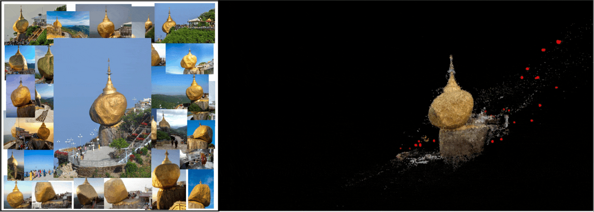
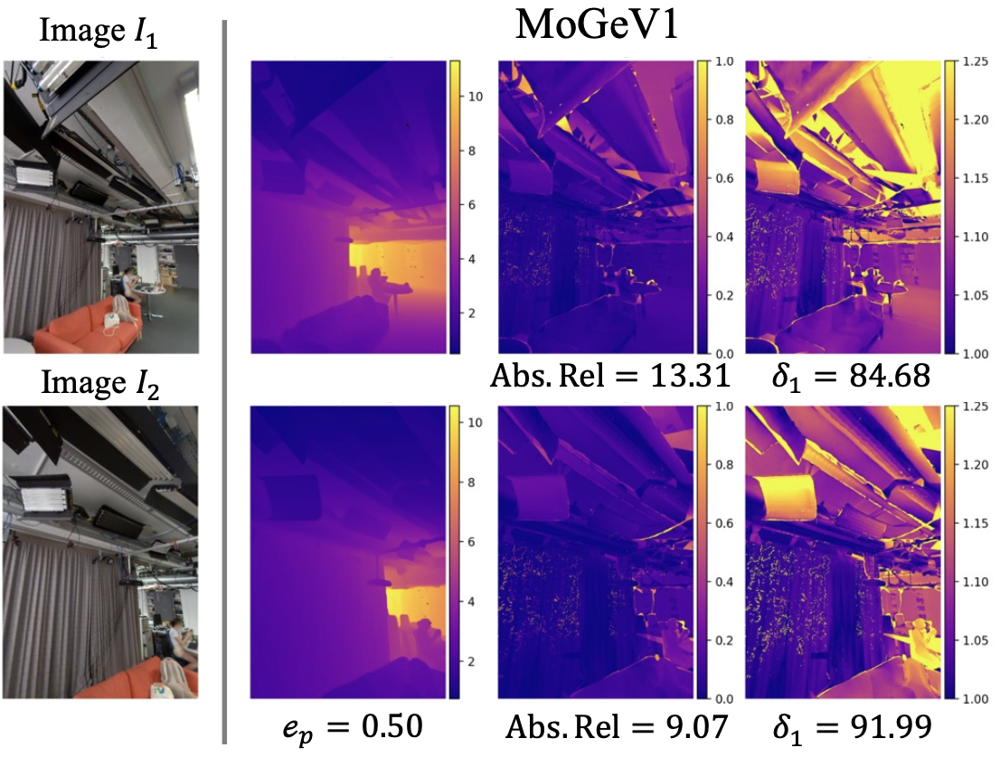
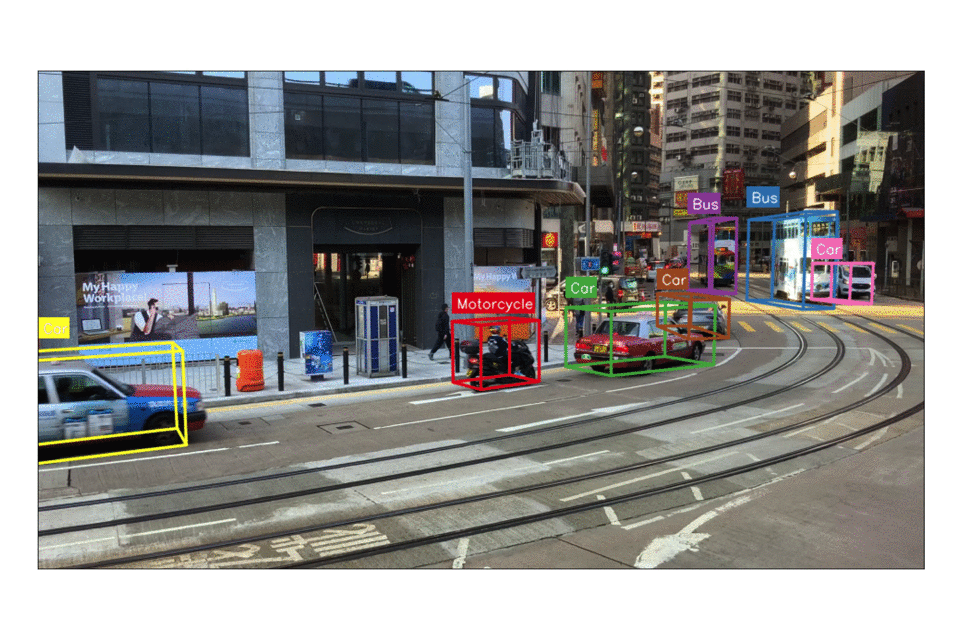
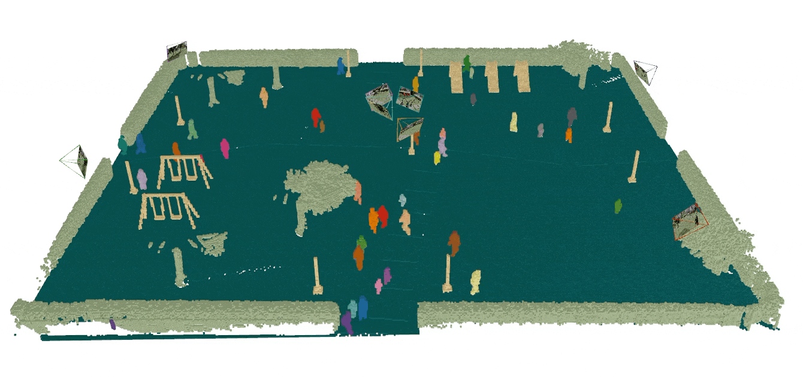
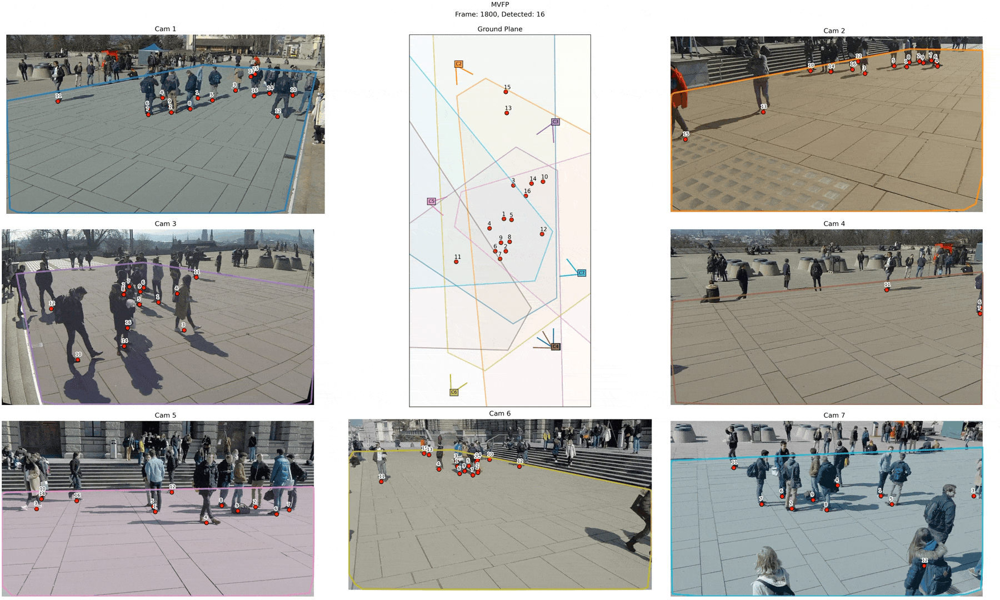

Publication
DGSfM at ACCV 2026
DGSfM is an oral presentation at ACCV 2026.
PhD Student
3D vision, geometry & scene understanding
I study 3D vision at Czech Technical University in Prague.
DGSfM is an oral presentation at ACCV 2026.
Our pose-based benchmark for monocular depth estimation appears in the NeurIPS 2026 ED Track.
Pseudo-labeling via object tracking for monocular 3D object detection.
Recovering geometry, camera pose, and structure from images.
Reconstructing scenes and understanding objects, people, and their spatial relationships.
Exploring visual representations that connect physical environments with their digital counterparts.
Research in geometry, depth, and multi-view understanding.
* denotes equal contribution.





Try another search or year.
Czech Technical University in Prague
I am a PhD student in the Visual Recognition Group at Czech Technical University in Prague, supervised by Zuzana Kúkelová and co-supervised by Torsten Sattler.
KIST / UST, Korea
Previously, I completed my M.S. and worked as an intern researcher in the Visual Intelligence Group at the Korea Institute of Science and Technology / University of Science and Technology, Korea, under Junghyun Cho.
For questions about my work or research conversations, feel free to get in touch.
Email me:sithu31296@gmail.com